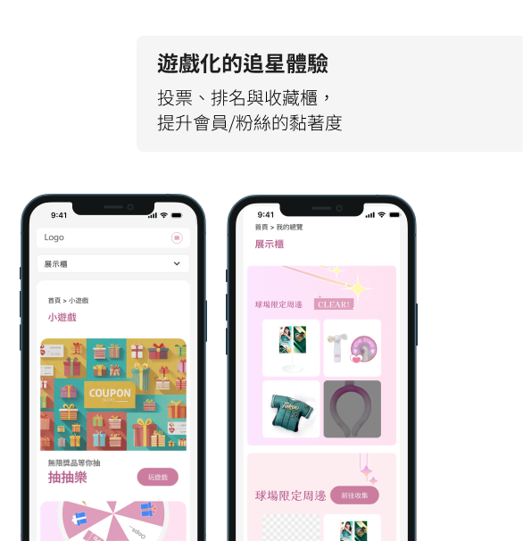
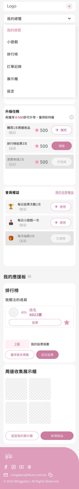

把追星變成一場收集遊戲 — 展示櫃、排行榜、投票競爭，用遊戲化機制讓粉絲從「看看就好」變成「每天都想打開」。
基於保密協議，本頁僅展示部分畫面與流程，不包含完整介面內容。
| 設計元素 | 選擇 | 原因 |
|---|---|---|
| 主色調 | 粉紅色 + 淺粉漸層 | 契合女子啦啦隊品牌調性，傳達青春活力 |
| 裝飾元素 | 星星閃爍圖示 | 呼應「WING STARS」品牌名稱 |
| 排行榜 | 前三名卡片式突出 | 獎盃式排列，遊戲化視覺刺激投票 |
| 展示櫃 | 卡片網格 + 鎖頭/CLEAR | 借鑒遊戲成就系統，驅動收集行為 |
| 導覽結構 | 左側固定 + 頂部全站導覽 | 清楚區分公共/私人功能區域 |
| 痛點 | 設計解法 |
|---|---|
| 粉絲缺乏與偶像的互動管道 | 個人化會員頁面，查看專屬數據與活動紀錄 |
| 周邊商品收藏難以展示 | 展示櫃功能，分系列陳列，鎖頭圖示激勵收集 |
| 粉絲間缺乏良性競爭 | 排行榜系統 + 投票機制 + 關注追蹤 |
| 粉絲社群變現困難 | 商城整合球場限定周邊、二手拍賣 |
| 不同裝置體驗不一致 | 同時設計桌面版與手機版 |

